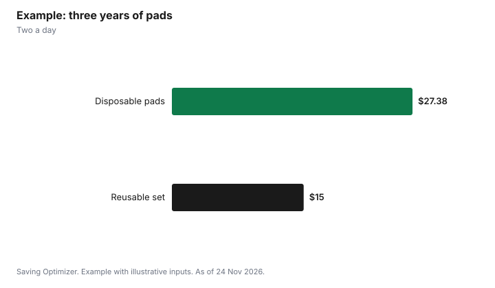

Personal Care · Canada
Reusable Cotton Rounds and Makeup Removers: Payback Maths

Disposable cotton pads are so cheap in Canada that reusable rounds take a while to pay back. Dollarama sells 100 pads for $1.25, so two a day costs about $9.13 a year. An example $15 set of reusable rounds pays for itself in about 20 months, and sooner if you'd otherwise buy pricier pads or makeup wipes.
Key takeaways
- Dollarama: 100 cotton pads for $1.25, or 1.25 cents each (checked 24 Nov 2026).
- Two pads a day: about $9.13 a year.
- Example $15 reusable set: payback in about 20 months.
- Wash them with your regular laundry in a mesh bag, so there's no extra cost.
- Makeup wipes cost more per use, so swapping those out pays back faster.
Cost per use
| Option | Price | Per use |
|---|---|---|
| Fluffs cotton pads, 100 (Dollarama) | $1.25 | 1.25 cents |
| Reusable rounds, example set | Example $15 | Falls with each wash |
| Makeup wipes, example 25 pack | Example $5 | 20 cents |
Make them last
- Wash in a mesh bag so they don't get lost.
- Skip fabric softener, which makes them less absorbent.
- Get enough for a week so you only wash once a week.
- Use them with micellar water or cleanser, the same way as disposables.

Payback: an example
Example: two disposable pads a day cost 2.5 cents, or about $9.13 a year. A $15 reusable set pays back in $15 / $9.13 = about 1.6 years, or 20 months. Over three years that's $27.38 for disposables vs $15 for reusables.
See a drugstore skincare routine and store-brand toiletries.
Sources
- Dollarama, Fluffs cotton pads 100 pack, checked 24 Nov 2026.
Frequently asked questions
Are reusable cotton rounds worth it?
They pay back slowly against cheap disposables, in about 20 months in this example, and faster if you replace makeup wipes.
How much do cotton pads cost in Canada?
Dollarama listed 100 cotton pads for $1.25 when checked on 24 Nov 2026.
How do I wash reusable cotton rounds?
Put them in a mesh bag with your regular laundry and skip fabric softener.
How many reusable rounds do I need?
Enough for a week, about 14 if you use two a day.
Do they remove makeup well?
Yes, with micellar water or a cleanser. Use a dark-coloured set for heavy makeup.
Researched and drafted with AI assistance and fact-checked against official Canadian sources. How we create content.
Note: Prices change. Reusable set and wipes prices are examples. Education only.